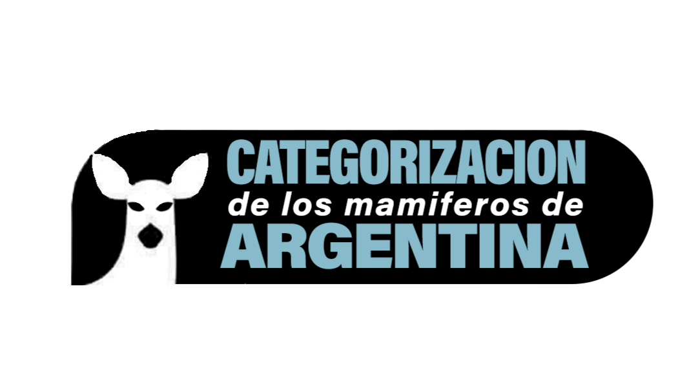
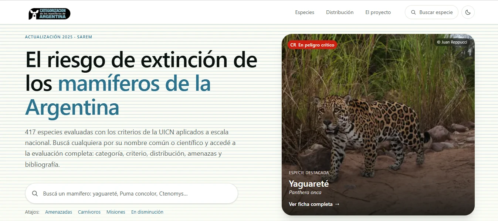
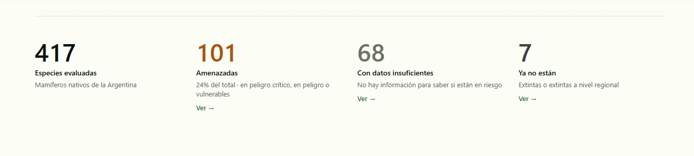
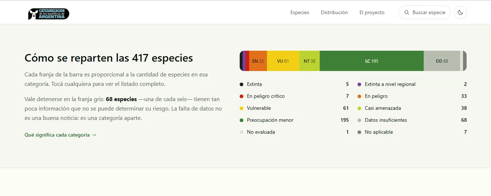
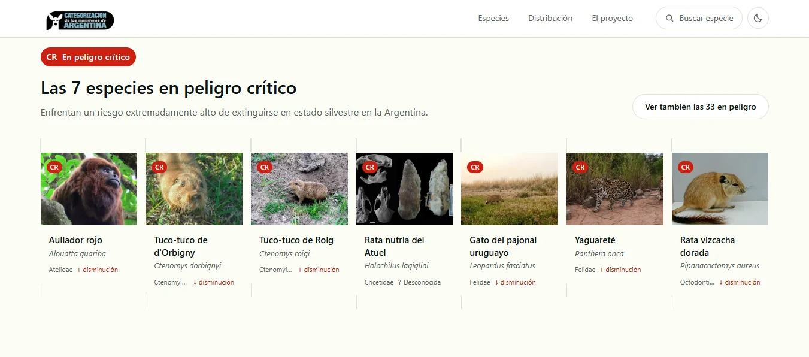
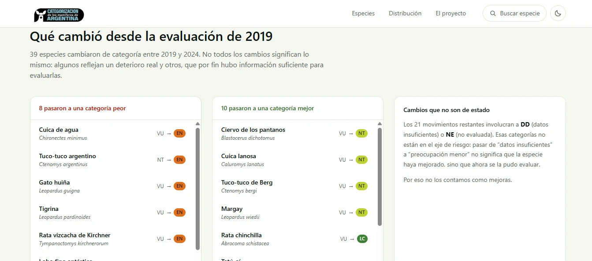
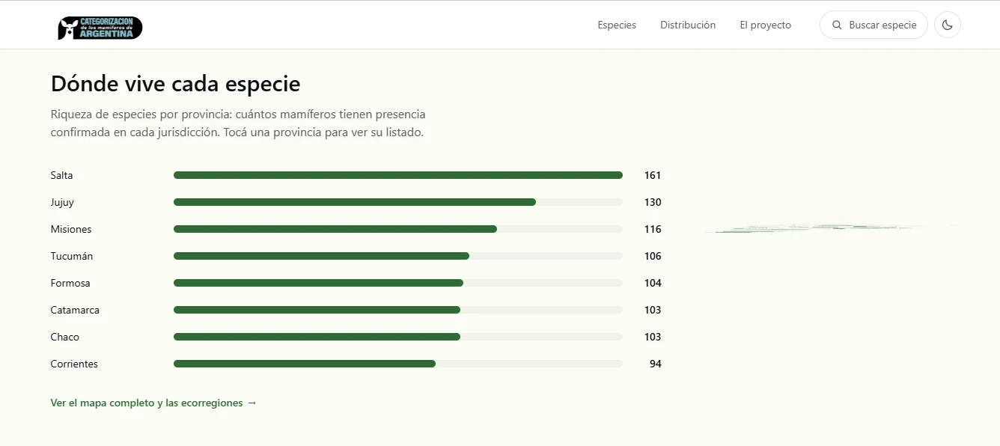
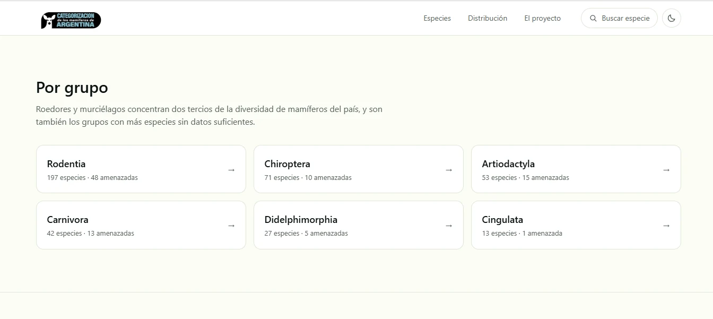
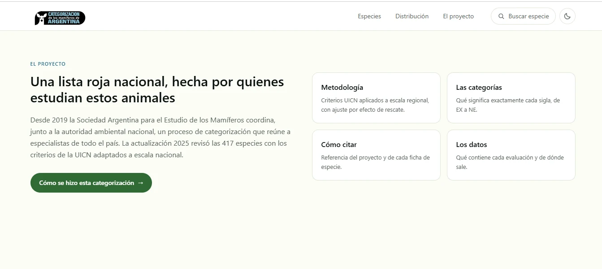

Mamíferos
Argentinos
Identidad & sitio gubernamental

Identidad & sitio gubernamental

Rediseño conceptual del portal que cataloga los mamíferos nativos de la Argentina. La portada abre con la especie destacada y un buscador directo: el sitio original cumplía la función informativa pero perdía a estudiantes, divulgadores y curiosos.

417 especies evaluadas, 101 amenazadas, 68 con datos insuficientes, 7 ya extintas. La primera pantalla resume la magnitud del problema en cifras que se leen de un vistazo antes de entrar al detalle.

Cada franja es proporcional a la cantidad de especies en su categoría UICN, de extinta a preocupación menor. La visualización vuelve tangible una tabla que en el original era pura planilla.

Fotografía, nombre común y científico, familia y tendencia poblacional. La grilla de fichas convierte la categoría más urgente en algo concreto: siete animales, no una sigla.

39 especies cambiaron de categoría entre 2019 y 2024. La comparación separa las que empeoraron de las que solo se pudieron evaluar mejor — un detalle que el dato crudo suele borrar.

Riqueza de especies por provincia, ordenada y tocable para ver el listado de cada jurisdicción. Reorganizar la entrada por geografía la vuelve más narrativa y accesible al no-especialista.

Roedores y murciélagos concentran dos tercios de la diversidad del país. Las tarjetas por orden mantienen una jerarquía tipográfica clara: display para los grupos, mono para el conteo de especies.

Metodología, categorías, cómo citar y de dónde salen los datos, todo a un clic. Un sistema visual que soporta actualización constante sin perder consistencia: el sitio pasó de leerse como trámite a leerse como enciclopedia curada.